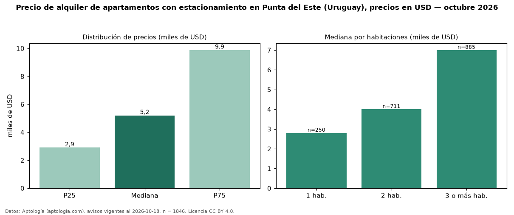

Precio de alquiler de apartamentos con estacionamiento en Punta del Este (Uruguay), precios en USD — octubre 2026
En Punta del Este (Uruguay), la mediana de canon mensual de apartamentos con estacionamiento es USD 5.200, según 1.846 avisos vigentes. Frente a la mediana de todos los apartamentos en alquiler de Punta del Este (USD 4.800, n = 2.464), queda 8 % por encima; este segmento reúne el 75 % de esos avisos. Por metro cuadrado, la mediana es USD 42,57/m² al mes (n = 1558), 3 % por encima del conjunto de referencia (USD 41,27/m²). La mitad central de los avisos va de USD 2.900 a USD 9.875 (razón 3,4), una dispersión alta. El área mediana anunciada es 114 m². El segmento con más oferta es el de 3 o más habitaciones (885 avisos, mediana USD 7.000); pasar de 1 habitación a 3 o más habitaciones cambia la mediana +150 %. La cuota de mantenimiento o condominio mediana declarada es USD 1.000 al mes (n = 177), aparte del canon. Datos: Aptología (aptologia.com), CC BY 4.0 — https://www.aptologia.com/uy/alquiler/punta-del-este. Archivos: PDF, CSV con las cifras y gráfica PNG.

| Avisos únicos | 1846 |
|---|---|
| Percentil 25 | COP 2.900 |
| Mediana | COP 5.200 |
| Percentil 75 | COP 9.875 |
| Mediana por m² | COP 42 |
Fuente: avisos vigentes de portales inmobiliarios recopilados por Aptología, deduplicados (mínimo 30 avisos únicos por celda). Precios pedidos, no cerrados. Fecha: 2026-10-18.